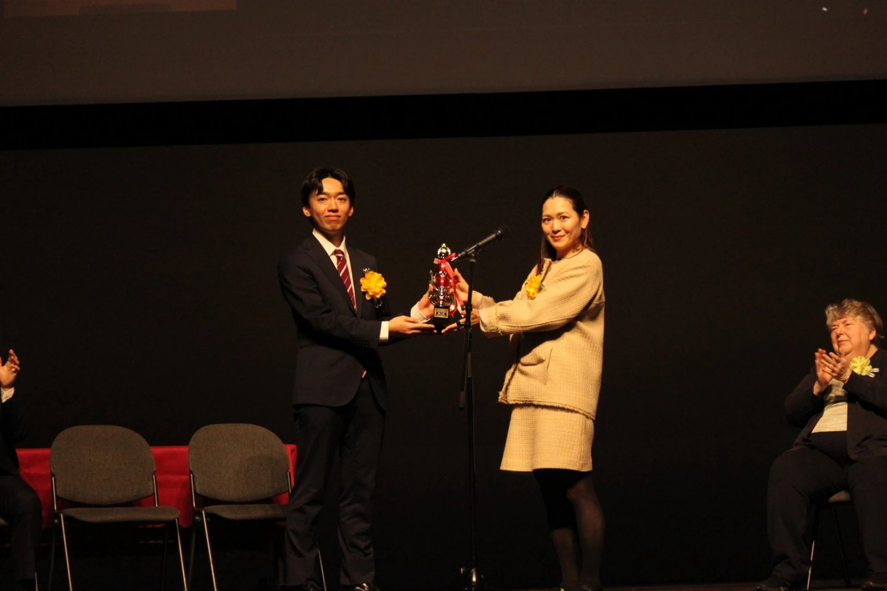
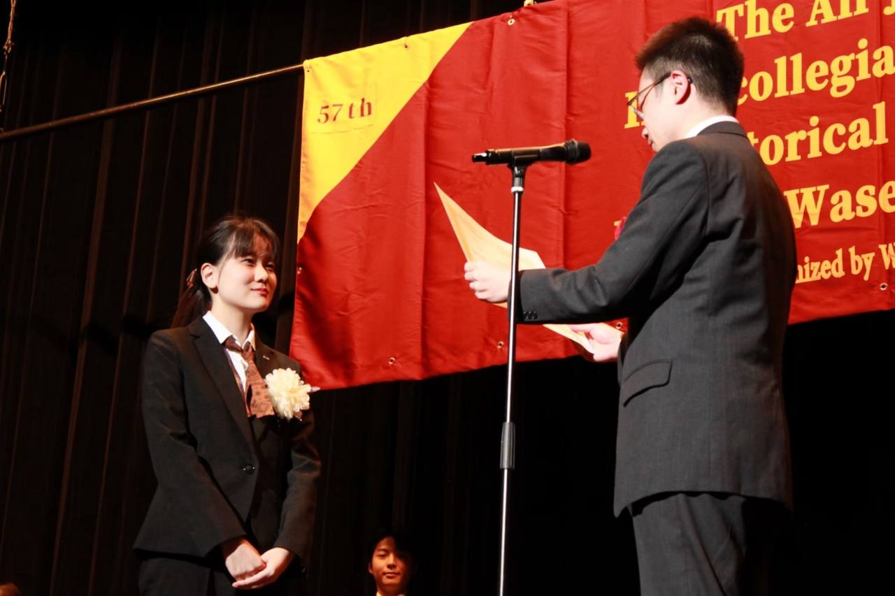
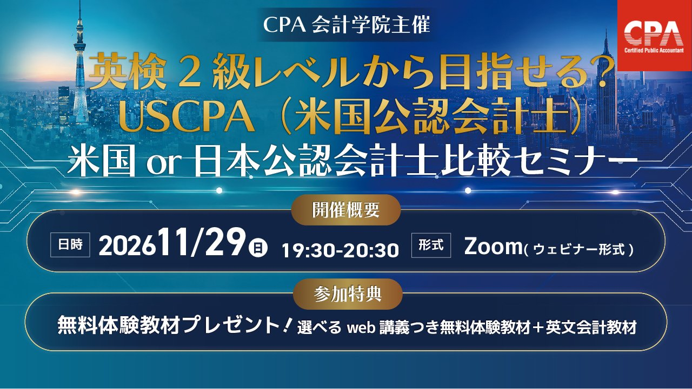

- 氏名
- 片山琉惺
- 大会名
- 第58回早稲田杯
- 結果
- 🥈 2位

Waseda Cup
早稲田杯
早稲田杯は、WESAが主催する英語スピーチの大会です。2026年の第58回は11月15日に、早稲田大学 大隈記念講堂（大講堂）で開催しました。
大会実績

協賛企業

CPA会計学院 早稲田校
早稲田大学の皆様、英語杯の開催誠におめでとうございます！
将来グローバルに活躍するため、「英語」に圧倒的な武器となる『専門性』を掛け合わせてみませんか？英語というツールに「会計」のスキルが加われば、就活や将来の市場価値が上がります！
「海外で働くなら米国公認会計士（USCPA）？日本の公認会計士との違いは？」そんな疑問にお答えする『日米・公認会計士 徹底比較セミナー』を開催いたします！英語力を活かす最強のキャリアパスを一緒に見つけましょう！